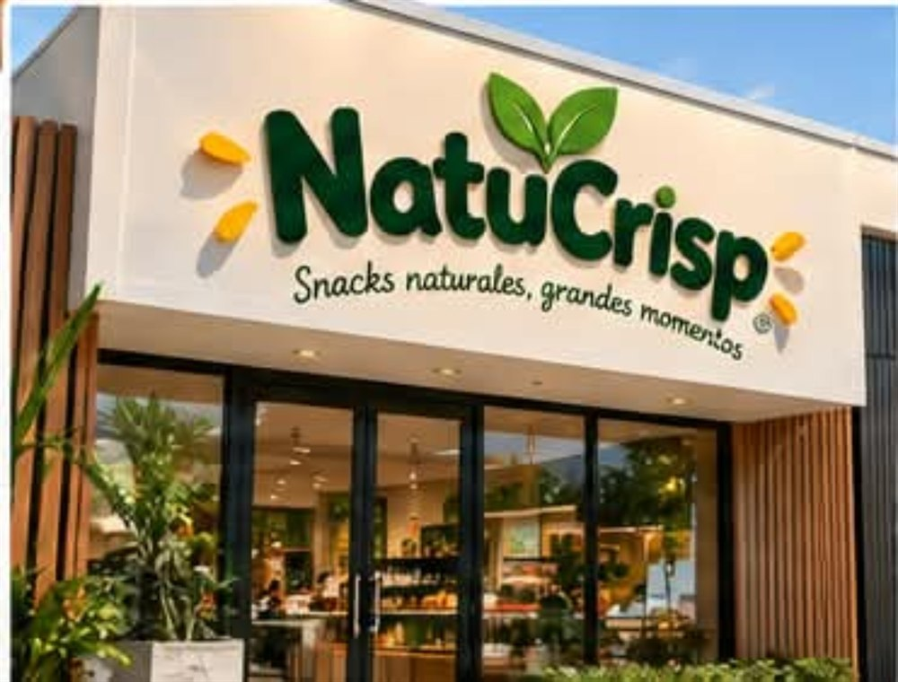
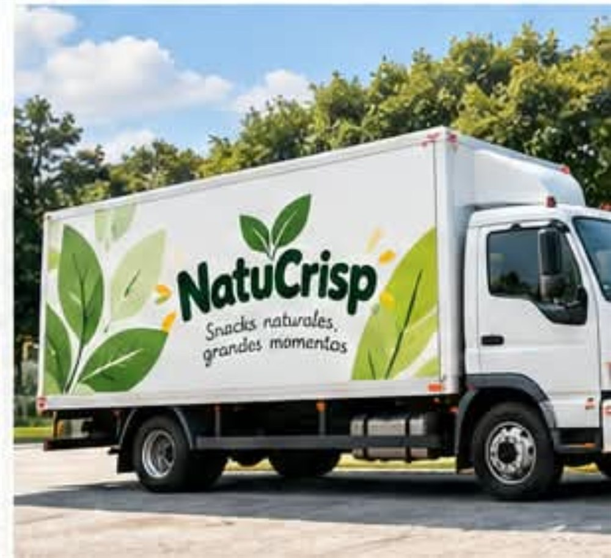
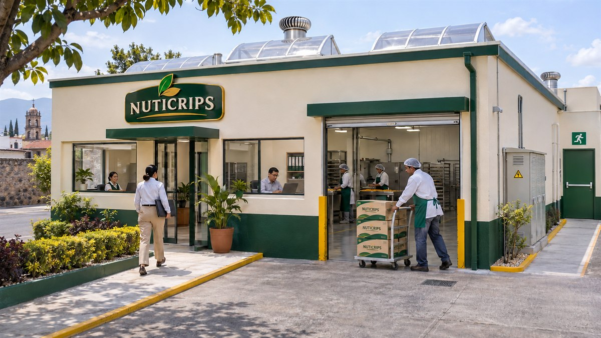
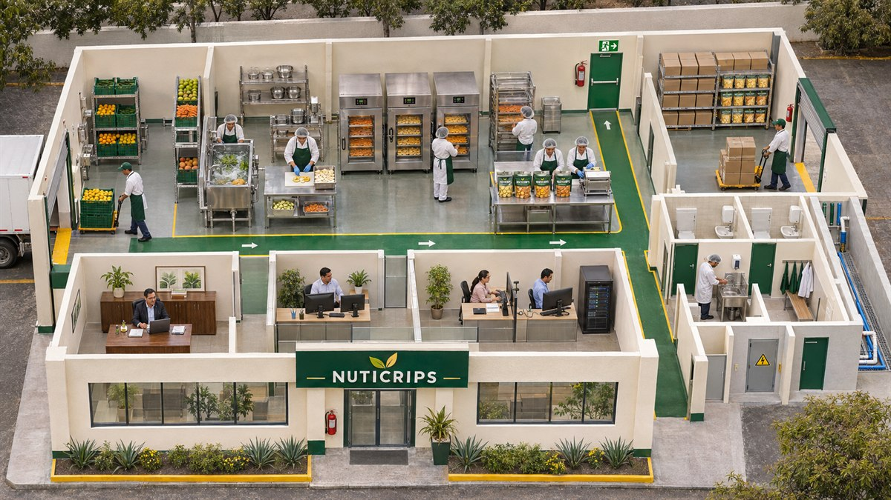
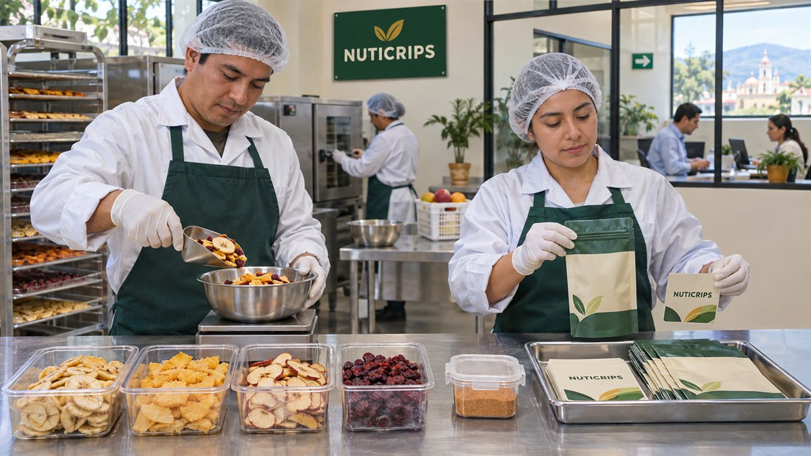

Abastecimiento Regional
Evaluación multicriterio (CEDA CDMX, CEDA Ecatepec y Texcoco) hacia nuestra sede propuesta en Carretera Lechería–Texcoco.
En NUTICRIPS® (NatuCrisp) deshidratamos por lotes frutas y verduras seleccionadas para crear botanas ligeras en prácticas bolsas kraft resellables de 60 g. Sabor honesto, color vivo y trazabilidad desde nuestra planta proyectada en Texcoco.
Una marca mexicana de snacks deshidratados enfocada en sabor auténtico, trazabilidad por lote y diseño comercial contemporáneo.
NUTICRIPS es la denominación corporativa del proyecto y NatuCrisp® («Snacks naturales, grandes momentos») es nuestra firma comercial. Diseñamos botanas crujientes de frutas y verduras deshidratadas para adultos de 20 a 45 años que buscan colaciones portátiles para escuela, trabajo, gimnasio o traslados, así como tiendas y cafeterías de Texcoco.
Nuestro modelo articula abastecimiento regional, control sanitario NOM-251-SSA1-2009, etiquetado claro NOM-051 y un programa de recompra NUTICRIPS Contigo.


Nacido en la Universidad Politécnica de Texcoco (Grupo 7MA1) como modelo integral de planta de 500 m² con 14 etapas controladas en 63 metros y 330 minutos.
Evaluación multicriterio (CEDA CDMX, CEDA Ecatepec y Texcoco) hacia nuestra sede propuesta en Carretera Lechería–Texcoco.
Desinfección validada y laminado parejo de fruta y verdura fresca bajo buenas prácticas de higiene NOM-251-SSA1-2009.
Secado controlado por lotes en cámaras de deshidratación con enfriado protegido para concentrar sabor sin frituras pesadas.
Pesaje de 60 g, sello hermético y control MPS/MRP/ERP proyectado para 480 bolsas diarias (12,000 mensuales).



Los pilares que definen cada decisión productiva, comercial y de servicio en NUTICRIPS, S.A. de C.V.
«Elaborar snacks de origen vegetal con estándares definidos de calidad, selección y conservación de materias primas, para ofrecer una opción de consumo práctica, agradable y adecuada a diferentes momentos del día.»
«Consolidar a NUTICRIPS como una marca mexicana reconocible en la categoría de frutas y verduras deshidratadas por su consistencia de producto, innovación, servicio y comunicación responsable.»
Tres socios fundadores al frente de una estructura proyectada de 8 departamentos y 49 plazas especializadas.
Lidera la dirección estratégica, la autorización de presupuestos, la evaluación de resultados y la supervisión integral de ambas subdirecciones.
Dirige producción por lotes, inocuidad alimentaria, abastecimiento y almacén, logística de reparto y mantenimiento técnico de planta.
Encabeza estrategia comercial y ventas, finanzas y contabilidad, desarrollo de competencias del personal y el club NUTICRIPS Contigo.
Despliega los departamentos operativos y administrativos o inspecciona la lámina oficial del organigrama.
Jefe, Supervisor, 4 Operadores, Técnico de Calidad en Proceso y 2 Auxiliares.
Jefe de Calidad, Supervisor, 2 Inspectores y Analista de Inocuidad.
Jefe de Área, Supervisor, 2 Almacenistas, Auxiliar de Inventarios y Recepción.
Jefe de Logística, Supervisor de Reparto, 4 Repartidores y Auxiliar.
Jefe Comercial, Supervisor de Ventas, 2 Ejecutivos y Atención a Clientes.
Jefe de Área, Supervisor Administrativo, Contador, Auxiliar Contable y Admin.
Jefe de RH, Supervisor de Capacitación y Desarrollo, Analista de RH y Nómina.
Jefe de Mantenimiento y Servicios, Supervisor, 2 Técnicos y Servicios Generales.
Elige tus bolsas kraft resellables de 60 g, agrégalas al carrito y acumula puntos hacia tu bolsa gratis en NUTICRIPS Contigo.
Plátano · Piña · Mango · Fresa
Combinación vibrante y aromática de cuatro frutas tropicales seleccionadas con dulzor natural y textura crujiente.
Manzana fresca · Canela natural
Láminas finas de manzana roja con un sazonado equilibrado de canela. Ligero, reconfortante e ideal con tu café.
Zanahoria · Betabel · Calabaza
Rodajas coloridas de hortalizas deshidratadas que conservan sus pigmentos naturales, fibra y un crujido adictivo.
100% Plátano seleccionado
Rodajas doradas y crujientes de plátano en su punto exacto de madurez. Pureza clásica para escuela, oficina o gimnasio.
Selecciona una variedad o nuestro empaque kraft para conocer exactamente los ingredientes, el proceso de deshidratación y los puntos de control por lote.
Cuatro frutas frescas lavadas, desinfectadas y rebanadas con grosor homogéneo antes del secado controlado en cámara (referencia de 180 min). Concentra aroma y dulzor natural sin frituras pesadas.
Cuéntanos qué variedad te emociona más, solicita una degustación piloto o envíanos tu pedido y sugerencias con un toque.
Selecciona tus preferencias con un clic y valida tus datos al instante.
Tu mensaje está listo para enviarse al equipo de NUTICRIPS.
Comunícate directamente con el equipo de NUTICRIPS, S.A. de C.V. para distribución, tiendas locales, muestras y comunidad digital.
Corredor Carretera Lechería–Texcoco, Los Reyes San Salvador
Texcoco, Estado de México.Lunes a Sábado · 9:00 a 19:00 hrs
Seguimiento posventa y pedidos piloto.